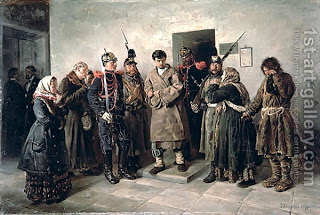

Arachin 7 - No Death Row
Rabbi Yose disagrees about a condemned being led to execution and says that he can promise the valuation others. But who does he disagree with ? Rabbi Yose concealed his message; he meant: if one led to execution harms someone, the Sages declare him liable, while Rabbi Yose says that he does not have to pay. They argue whether his heirs have to pay for him. Alternatively, since the obligations of a damager are written in the Torah, they argue whether this has the power of a court decision.
One condemned by the court is executed immediately, to spare the anguish of waiting. If a pregnant woman is condemned, they don't wait until she gives birth; however, if the baby moved as a beginning of birth, it became a separate person, and then they wait until she gives birth. A dead body is prohibited for benefit, but they may use a woman's hair.
But the hair also should be forbidden! - She said, "Give my hair to my daughter." Why would we listen? - It's a wig tied to her hair. With her words, she revealed that she does not consider it part of her body, and this permits to remove the hair later.
Art: Vladimir Egorovic Makovsky - The Condemned